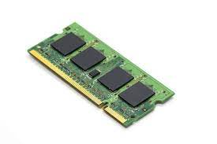
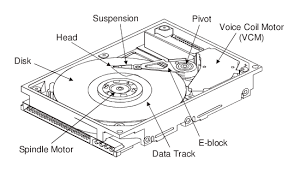

Computer Memory

What do you mean by computer memory?
Every computer has a certain amount of capacity to store data. This storage capacity is known as the memory of the computer.
Computer memory is divided into two categories- primary and secondary. Primary memory is directly accessed by a processor to execute instructions. An example of primary memory is Random Access Memory(RAM). Secondary memory, such as hard disk drives and Solid State Drive(SSD), are used to store and retrieve data from a computer. Both memories are an integral part of a computer. The failure of any of the two memories stops a computer from functioning. Let us learn more about computer memory.
Random Access Memory(RAM)

Ram is a primary memory device that stores data temporarily in the form of instructions required by the processor to execute the tasks of a user. RAM stores active data on a computer, which means the data on which work is done. For example, if you are working on an MS- Word file, then information about the MS Word file will be stored in RAM. Whenever you want to perform any action regarding the file or adding or modifying its content, the action is performed by the processor after retrieving the required information from the RAM. However, the data in RAM stays as long as your computer is running. If you turn off the computer, then RAM loses its stored data.
Read-only memory(ROM)
ROM
Like RAM, ROM is also a part of the 'build-in' memory of a computer; however, unlike RAM, the storage of data and instruction in ROM is permanent until it is over-written. It stores some basic input-output instructions programmed by the manufacturer to operate the computer. The contents of a ROM remain intact, even when the power supply is switched off. Hence, ROM is non-volatile memory.
Hard Disk Drives(HDD)
HDD
A hard disk drive is the most important storage type among various types of permanent storage used in a computer, such as Compact Drive(CD), Digital Versatile Disk(DVD), and a pen drive. A hard disk drive plays a significant role in terms of performance, storage capacity, and reliability. Performance determines the speed at which data is retrieved and stored in a hard disk drive. The storage capacity determines the amount of data that can be stored in a hard disk drive. Reliability determines the life of a hard disk drive and the capability to prevent data loss.
What are the components of a Hard Disk Drives and how does a Hard Disk Drive works?
A hard disk drive uses round and flat disks called platters that are coated with special magnetic materials to store data. These platters are introduced with a hole at the center and are mounted on a hard disk drive by stacking them onto a spindle(a small cylinder that rotates platters). The platters in the hard disk drive rotate at high speed by a special spindle motor attached to the spindle. An electromagnetic read/write device known as the head is mounted onto head sliders which provide physical support to the head. The heads are used to record information onto the hard disk drive or read information from the hard disk drive. The head slider attaches with head arms(move read/write heads on the location where the information needs to be read or written), which are connected mechanically into a head assembly(and assembly that contains a spindle motor and a voice coil) and placed over the surface of the hard disk drive through a device called an actuator. A logic board(is a circuit board) controls the working of all the parts present in the hard disk drive and communicates with a computer.
In a platter, one surface can hold 10 billons bits of data. The platter records information in a concentric circle called tracks. These tracks are further split into various chunks called sectors that hold 512 bytes of information.
Solid State Drive(SSD)
SSD
SSD is another storage device in comparison to hard disk drives. An SSD does not contain any moving parts, moving parts, such as a spinning platter and head; therefore, it is faster than a hard disk drive. An SSD uses transistors to store data. In SSD, the information can be accessed immediately, because there is no latency time when data is transferred. For this reason, SSDs have greater stability and reliability than hard disk drives. So, if you want to use your machine for official work or coding not for watching movies or playing games you can go for SSD instead of a hard disk drive.
M.2 SSD
How does an SSD work?
The working of an SSD is different from the working of a hard disk drive. In an SSD, an electric current passes to transistors in the form of 0s and 1s. If the transistor allows the electric current to pass through it, then it is represented as 1 and if the transistor does not allow the electric current to pass through it, then it is represented as 0. An SSD has a controller that reads and writes data to the transistors and transfers the data to a computer. In addition, a controller manages all the data that are stored in the SSD by keeping track of data and ensuring even distribution of data over transistors.
Cache Memory
Cache Memory
The cache is a small memory that operates much faster than the primary memory. When the CPU required a certain value stored in the primary memory, it first sends the cache, which stores recently used values. If the required value is already present in the cache, it is made available to the CPU very quickly because the cache memory is much faster than the primary memory.